Working with CSS Fonts
In these lectures, you will larn about typography and its best practices, fonts, and the text-shadow property.
What are the fundamentals of typography?
DESCRIPTION
Typography is the art of choosing the right fonts and format to make text visually appealing and easy to read. "Type" refers to how the individual characters are designed and arranged. By choosing the right fonts for your project, you can evoke emotions, establish hierarchy, and reinforce your brain's identity.
We'll start by talking about typefaces and fonts. A typeface is the overall design and style of a set of characters, numbers, and symbols. It's like a blueprint for a family of fonts. A font is a specific variation of a typeface with specific characteristics, such as size, weight, style, and width.
Two very important examples of typefaces are serif and Sans Serif. The Serif typeface has a classical style with small lines as the end of characters. Serif typefaces are commonly used for printed materials, like books.

Some examples are Times New Roman, Georgia, and Garamond.
In cotrast, the San Serif typeface has more modern look, without the small lines at the end of characters. Sans Serif typefaces are commonly used in digital design because they are easy to read on screen. Some examples include Helvetica, Arial, And Roboto.

There are other typeface classifications, like Script, Blackletter, Monospaced, and Decorative.
We mentioned that typefaces are like blueprints for fonts, right? Well, fonts can also be grouped if they share a similar design. Different weight and styles cab be combined. For example, Times New ROman includes variations lie TIme New Roman Bold, Times New Roman Italic, and Times New Roman Bold Italic. These variations within the same font family typically include:
- Weight: the thickness of the characters, including light, regular, bold, and black.
- Style: The slant and orientation of the characters, like italic and oblique.
- Width: The horizontal space occupied by characters, like condensed and expanded.
Great. Now let's explore the fundamental elements of typography:
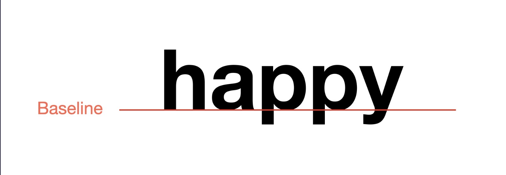
The baseline is the imaginery line on which most characters rest.
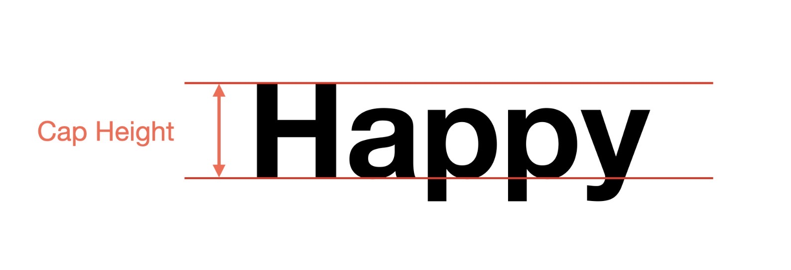
The cap height is the height of uppercase letters, measured from the baseline to the top.
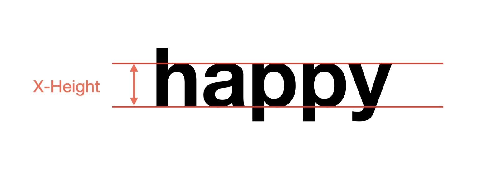
The x-height is the average height of lowercase letters, excluding ascenders and descenders.
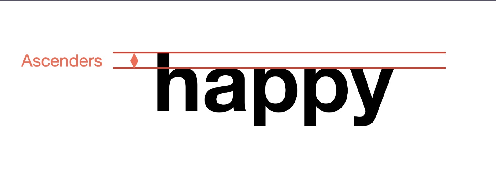
Ascenders are the part of lowercase letter that extend abowe the x-height, such as the tops of the letters h,b,d and f.
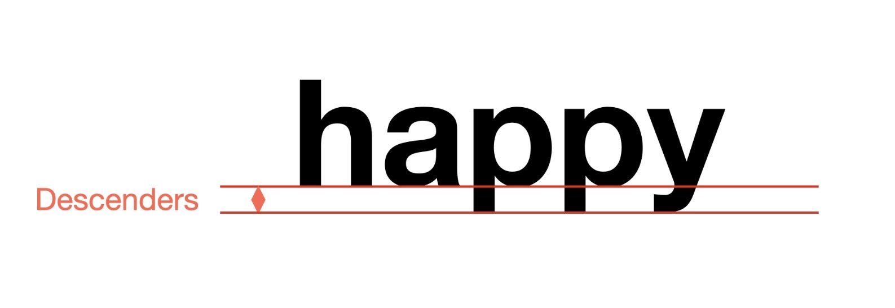
Descenders are the part of lowercase letters that extend bellow the baseline, such as the tails of y, g, p, and q.
There are more advanced cincepts too, like kerning, tracking, and leading.
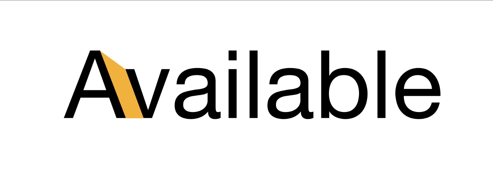
Kerning is how space is adjusted between specific pairs of characters to improve their readibility and aestthetics. For example, reducing the space between the letters A and V.
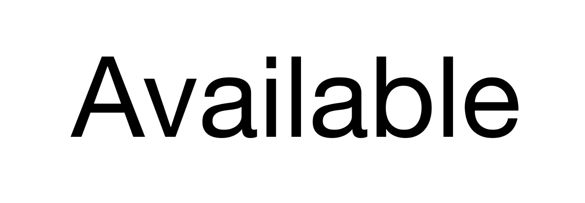
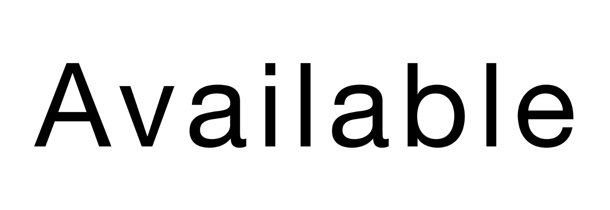
Tracking is how space is adjusted between all characters in a block of text. It's essentially the distance between the characters. It affect how dense and open the text will be.
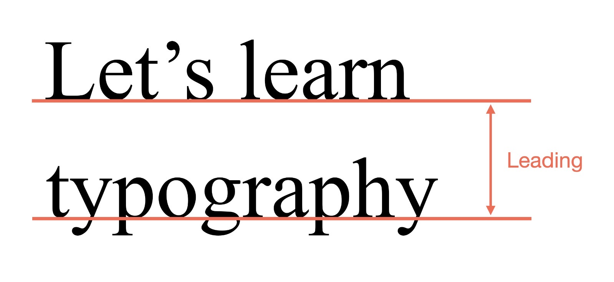
Leading is the vertical space between lines of text. It's measured from the baseline of one line to the baseline of the next line.
Beibg familiar with these concepts is essential for choosing the right font for your project.
Line length can also have a significant impact on readibility. If the text is too narrow, readers will need to refocus too often. If the text is too wide, they may experience fatigue. You should find the optimal line length for comfortable reading.
With typography, you can also create a visual hierarchy, helping readers understand what parts of the text or user interface are most important. Larger fonts usually indicate that text is more important. Making the text bold is also helpful for emphasizing it.
Underlining text or presenting it in italic is helpful for highlighting key points. Providing accurate spacing around the text can highlights its importance. And color contrast can bring readers attention to specific parts of the text.
Having basic knowledge of typography is essential for designing visually engaging applications. By understanding fonts, spacing, and hierarchy, you can create visual experiences that enhance the readability of your cintent and reinforce your brand's identity.
What are some best practices for working with Typography in your Designs?
DESCRIPTION
Typography is the art and technique of arranging type to communicate effectively. It involves formatting text and selecting appropriate fonts. In this lesson, you will learn best practices for using typography in a way that enhances readability, hierarchy, and accessibility.
Let's start with readability. You should choose clear and simple fonts to make your designs easy to understand. This is particularly important for the main text of your website. Users are more likely to engage with your content if the font is easy to read. Some frequently used fonts for web development are Roboto, Open Sans, Poppins, Lato, and Barlow. But there are many to choose from and you will definitely find one that fits your needs.
Text should also be large enough for everyone to read it. You should try to keep lines relatively short. The specific number of characters per line really depends on your project. But keeping lines short will make the content easier to read.
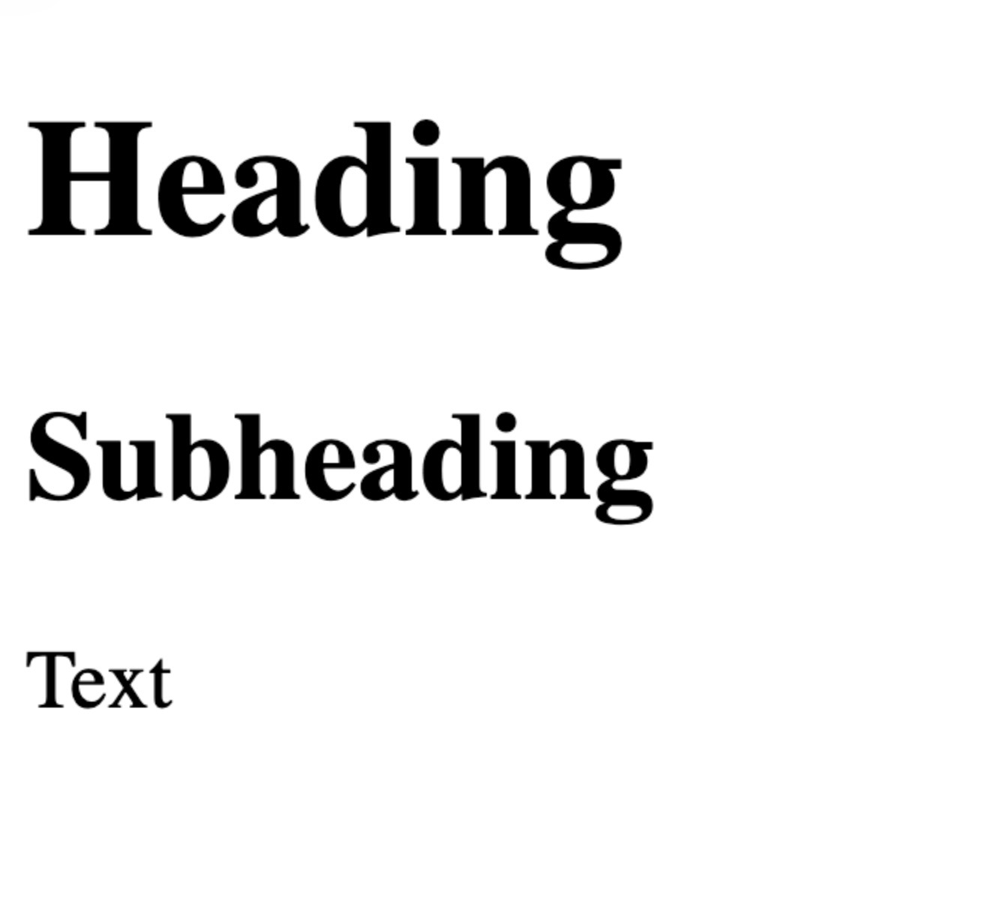
You can use font size to create a visual hierarchy for heading, subheading, paragraphs, and other elements.
For example, the main heading on a webpage should have a larger font, followed by subheadings with smaller font sizes. This will give every element in the hierarchy a specific font size that helps users navigate through the structure visually.
You should use two or three fonts at most to create a visual consistency. Using too many fonts can make the text more difficult to read and weaken your branding's identity. This can also impact the user experience by increasing the load time of the website.
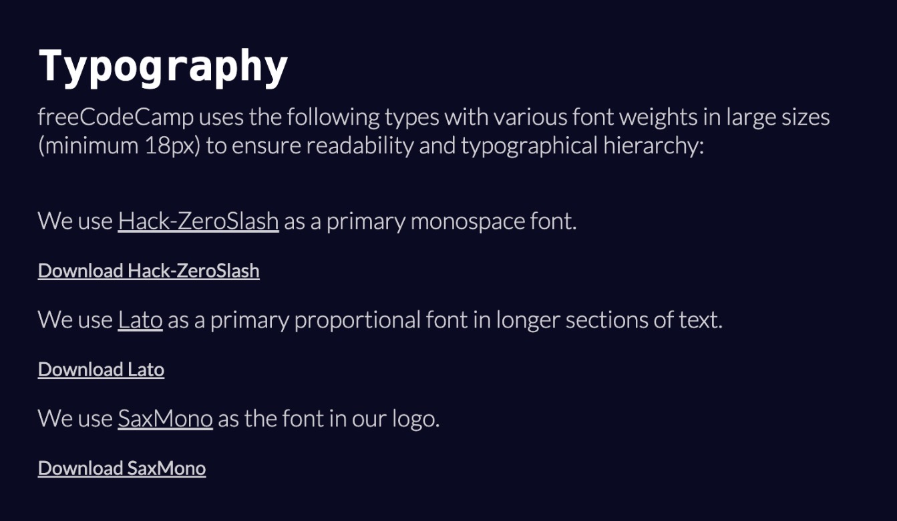
Once you choose these two or three fonts, use them consistently across different pages and elements. These fonts should be consistent with the overall design of your web application, product, or service.
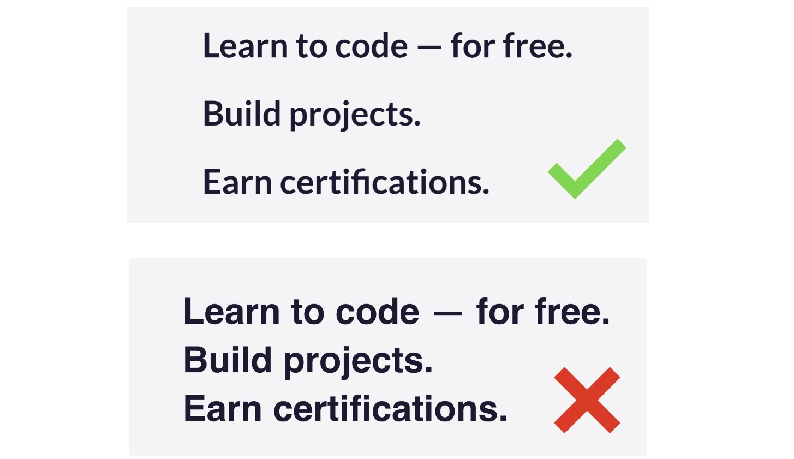
You should also use whitespace to create a visual balance and enhance readability.
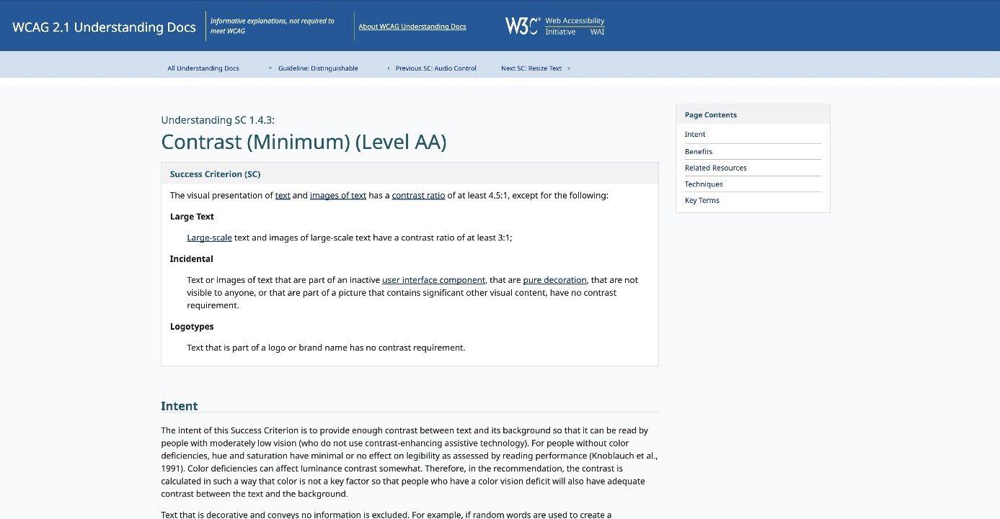
For accessibility purposes, you should follow the Web Content Accessibility Guidelines. These guidelines set the recommended contrast ratio for text. A higher contrast ratio makes text easier to read, especially for people with visual disabilities.
You should also provide options to adjust font size and avoid complex fonts as much as possible. As a general rule, you should use simple fonts whenever possible. If your content is easy to read, users are more likely to engage with it.
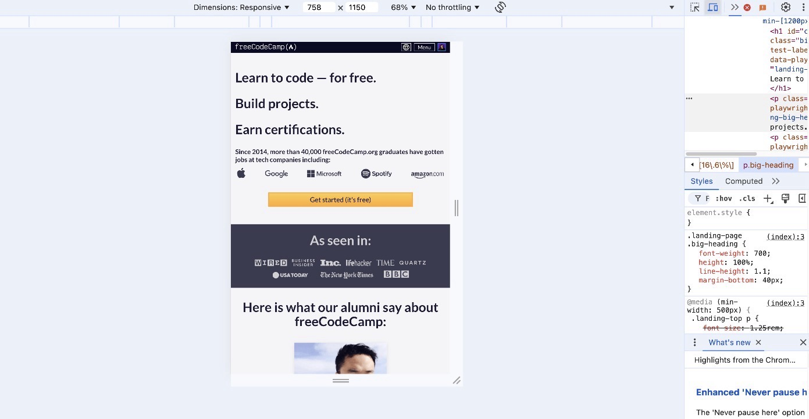
A final tip for working with typography is making sure that your fonts are displayed correctly on different screen sizes and devices.
Typography is a powerful tool for creating beautiful designs and engaging user experiences. By understanding the fundamentals of typography and applying these best practices, you can create effective designs.
What are font families and how do they work?
LESSON
A font family is a group of fonts that share a common design. All the fonts that belong to the same family are based on the same core typeface, but they also have variations in their style, weight, and width. You can think of them as siblings who share similar characteristics but also have some differences. For example, Arial is a font family that includes variations like Arial Bold and Arial Italic.
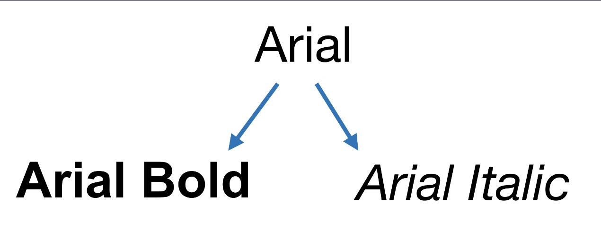
In CSS, you can set the font family with the font-family property. Here is an example of setting the font for the paragraph to Arial
But what if the font family is not found? You can specify multiple font families in order of priority, from highest to lowest, by separating them with commas. These alternative fonts will act as fallback options. In this example, Arial is a primary font and Lato is an alternative font:
The browser will render the first font (Arial) if it's found on the device. If not, the second font (Lato) will be rendered.
You should also know how this process works behind the scenes. The selection process doesn't stop if the first font is available. The font family is chosen one character at a time, so if a font lacks a specific character, the browser looks for it in the lower-priority fonts. Interesting, right?
In the context of web development, you'll also find generic font families. They're very important. A generic font family is a default font that web browsers will render when the higher priority fonts are not available. To ensure that the content is still readable, the browser replaces the original font with the most appropriate font found, based on the generic font family specified. Some of the most commonly used ones are:
- serif
- sans-serif
- monospace
- cursive
- fantasy
But there are more options to choose from. In the code below, we have three alternative font families:
Arial has the highest priority. If Arial is not found, then the browser will try to render Lato. If neither is found, the browser will use the generic sans-serif font family, selecting a font with these characteristics from those installed on the user's system.
You should always include a generic font family at the end of the font-family list. Keep in mind that the generic font may look different from the font that you originally envisioned in your design, so it's always helpful to check how these fallback fonts look on different browsers.
To make the user experience as consistent as possible, it's also recommended to use web-safe fonts. These font families are usually installed on most devices, so they're very likely to be found and rendered correctly for most users. You'll learn more about them in the next lessons.
Font families are essential in the world of web design. By using the font-family property, you can instantly transform the look and feel of your text.
What are web safe fonts?
DESCRIPTION
Web-safe fonts are a subset of fonts that are very likely to be installed on a computer or device. They are widely supported across different operating systems and web browsers, so it's very likely that they will be rendered and displayed consistently. Let's see how this works.
Browsers are responsible for interpreting and displaying fonts on a website. When the browser has to render a font, it tries to find the font file on the user's system. But if the font is not found, it will usually fall back to a default system font. This ensures that the content is still readable, even if the specific font that should be rendered on the website is missing.
However, the fallback font selected by the browser may look very different from the font that was originally supposed to be rendered. This can have a critical impact on the overall design and user experience. To avoid this, you should use web-safe fonts whenever possible. You have two options. You can either use them as your primary fonts or you can use custom fonts with a web-safe font as a fallback option. This way, you can control how the website will look in case the custom font is not found.
Let's check out some examples of web-safe fonts. In a previous lesson, you learned that sans-serif fonts are commonly used for web development because they don't have small "feet" or lines at the end of the characters, so they're easy to read on screen. Some examples of web-safe sans-serif fonts are:
Arial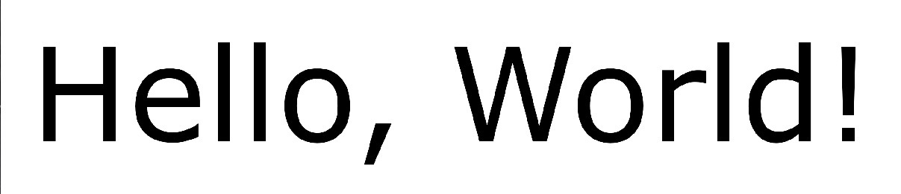
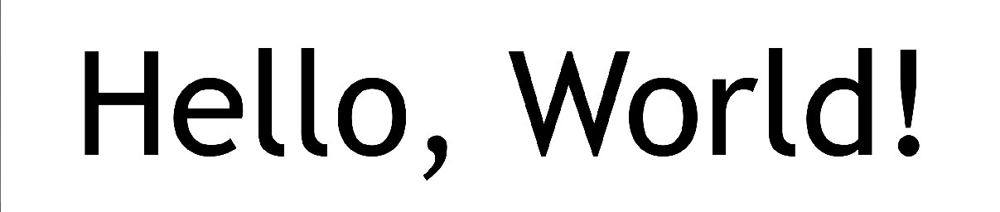
In contrast, serif fonts do have small "feet" at the end of the characters, so they're commonly used for traditional print. But if you ever need to use them for web development purposes, web-safe serif fonts include:
Times New Roman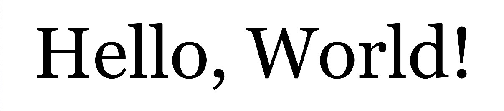
By using web-safe fonts, you can make sure that your design looks consistent across devices and platforms. They can also enhance accessibility for users with visual disabilities, since they are simple and easy to read. And finally, web-safe fonts can reduce page load time, since they don't have to be downloaded if they're already installed.
Now that you know what web-safe fonts are, you can start using them and assigning them as fallbacks to create reliable user experiences across browsers and platforms.
What Is the @font-face At-Rule, and how does it works?
DESCRIPTION
Before we dive in, you should know what an at-rule is in CSS. At-rules are statements that provide instructions to the browser. You can use them to define various aspects of the stylesheet, such as media queries, keyframes, font faces, and more. You'll learn more about concepts like media queries and keyframes in future lessons. This time, you'll learn about the @font-face at-rule.
With @font-face, you can define a custom font by specifying the font file, format, and other important properties, like weight and style. This is the basic syntax. You can see @font-face followed by a block enclosed by curly brackets:
Within the curly brackets, you will need to include descriptors to customize your font face. Let's see some of the most commonly used ones. The font-family descriptor specifies the name that you will use throughout the stylesheet to refer to that font. For example, let's say that you define this @font-face rule. It has the font-family descriptor defined and its value is MyCustomFont
In that case, you would need to use that name in your stylesheet wherever you want to assign that custom font family to all the elements matched by a CSS selector. For example, you would use it as the value of font-family
But for the @font-face at-rule to be valid, you also need to specify the src. This contains references to the font resources. It's basically a list of external references or locally-installed font face names separated by commas. It can also include hints about the format and technology of the font resources.
In the code below, the src is defined. The value is a list of URLs separated by commas and placed on separate lines to improve readability:
You can call the url() function to include a file in your stylesheet. In this case, we are including the font files. You'll need to write the file path within parentheses and quotation marks, including the file extension. To improve readability, you can write each resource on a different line, but the last one should end with a semicolon.
For each font resource, you can also specify the format. This is optional. It's a hint for the browser on the font format. If the format is omitted, the resource will be downloaded and the format will be detected after it's downloaded. If the format is invalid, the resource will not be downloaded.
Possible font formats include collection, embedded-opentype, opentype, svg, truetype, woff, and woff2.
Here's an example with font formats. Notice how we write the specific format within parentheses and quotes:
In this example, you can see that we're specifying the WOFF2 format, the OpenType format, and the WOFF format.
woff stands for "Web Open Font Format." The difference between WOFF and WOFF2 is the algorithm used to compress the data. OpenType is a format for scalable computer fonts developed by Microsoft and Adobe that allows users to access additional features in a font. It's widely used across major operating systems.
In addition to specifying the format, you can also specify the technology of the font resource. This is optional too. Here's an example where we specify the technology of the second font resource.
How do you work with external fonts like font Squirrel and Goofle Fonts?
LESSON
An external font is a font file that is not included directly within your project files. They're usually hosted on a separate server. A server is a computer that provides data or services to other computers over a network. You will learn more about servers in future lessons. External fonts give you more flexibility because you can use custom fonts that may not be installed on the user's device.
Google Fonts and Font Squirrel are popular online resources for finding and using free fonts for web development purposes. You can incorporate them into your projects very easily.
Let's start with Google Fonts. This is a Google service that offers a collection of fonts, many of which are designed specifically for web development. On the Google Fonts user interface, you can see many different elements. Let's go through them one by one. On the left sidebar, you will find:
- A section to see, find, and filter fonts.
- A special section on Noto, a collection of high-quality fonts with various weight, width, and styles that are perfect for communicating in more than 1.000 languages and over 150 writing systems.
- A section where you can find and download icons for your web projects.
- A section where you can learn more about fonts and their best practices, followed by frequently asked questions.
To add a Google Font to your website, you should go to the first section (Fonts). You can customize the preview text on the left sidebar, where it says "Preview." Just write the text that you would like to see and it will be updated automatically. This is helpful to preview the font with the text that you already have in mind for your website. You can also adjust the font size and filter the fonts based on their characteristics.
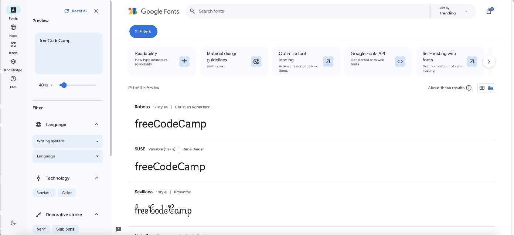
To see more information about a font, just click on it and you will see important information about the font, like who designed it, preview text, and different styles, like light, regular, medium, bold, and black. If you click on the options at the top, you can go to the type tester, see individual glyphs, and learn more about the font and its license.
You can customize the font size of the preview text with the blue slider located next to the field where you can enter the preview text.
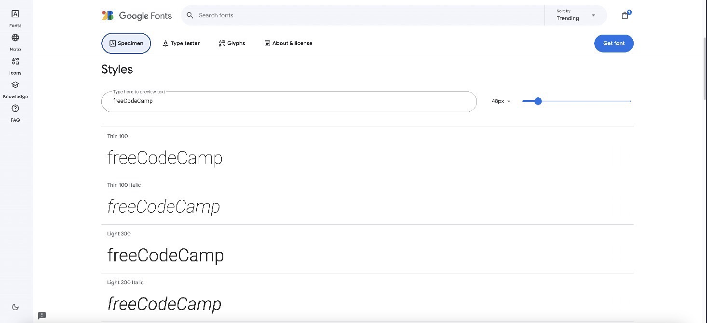
Once you're ready to add the font to your project, click on the blue "Get font" button at the top. You'll be taken to a summary page where you'll see the fonts that you currently have selected. You can have multiple fonts selected simultaneously.
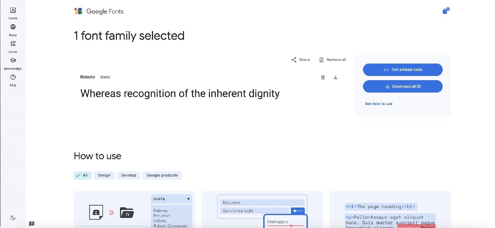
Next, you have to choose if you would like to download the font files to add them to your project as local files or if you would like to use them as external fonts and download them from Google's servers when a user enters your website. Click on "Download all" if you want to download them but if you prefer to use them as external fonts on Google's servers, click on "Get embed code." If you click on "Get embed code," you'll see the instructions that you should follow to add these external fonts to your project.
For web development projects, you have two options. You can either use a link element or @import. If you choose the link element option, you can copy and paste the HTML snippet and the CSS rules to add them to your project. You should embed the code in the head element of your HTML file and add the CSS rules that fit your needs.
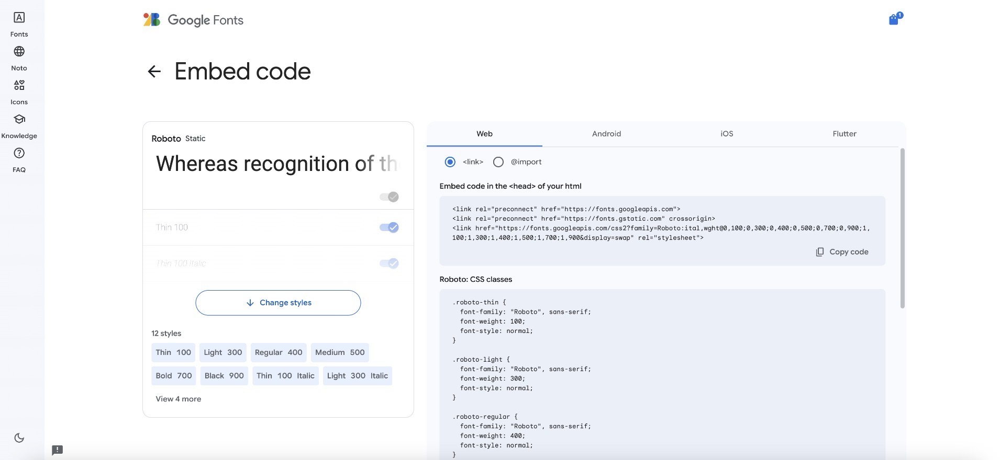
Here is an example of using all Roboto styles:
There's a CSS rule for each font style. Each rule assigns the custom fonts with fallback fonts in case the custom fonts are not loaded properly.
If you choose the @import option instead, you will need to add that rule to your CSS file.
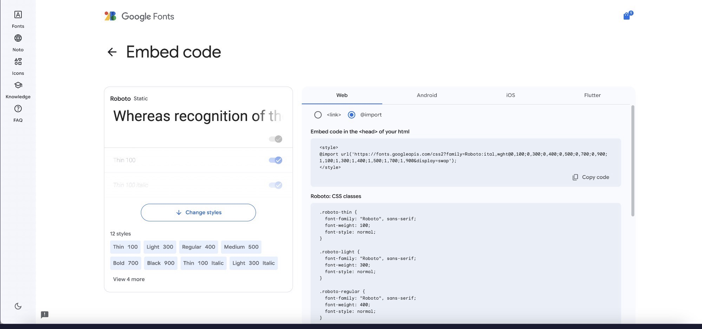
Here is an example:
The CSS rules are exactly the same.
If you only want to include specific font styles, you also have the option to remove them from these snippets. The HTML and CSS snippets will be updated automatically.
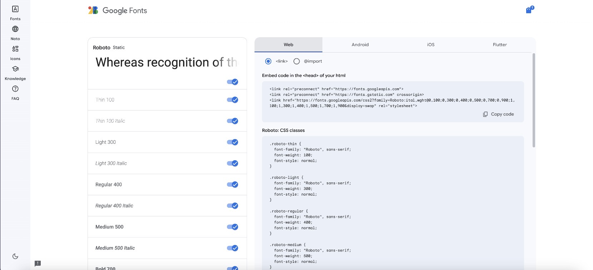
And this is Google Fonts. It's one of the most popular options for finding free and open source fonts for web development projects.
Another great option is Font Squirrel, where you can find and download the custom fonts that you envision for your design.
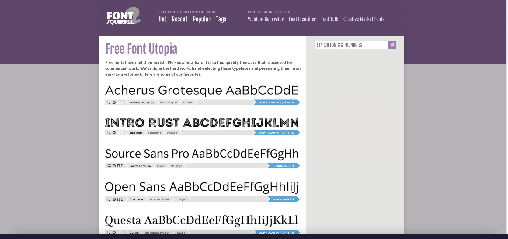
If you search for a font and click on a result, you'll see more details about the font, including specimens, test drive, glyphs, and Webfont kit.
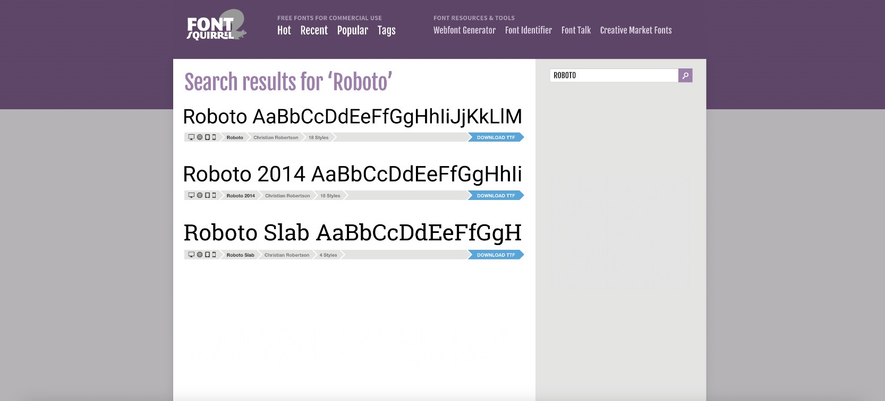
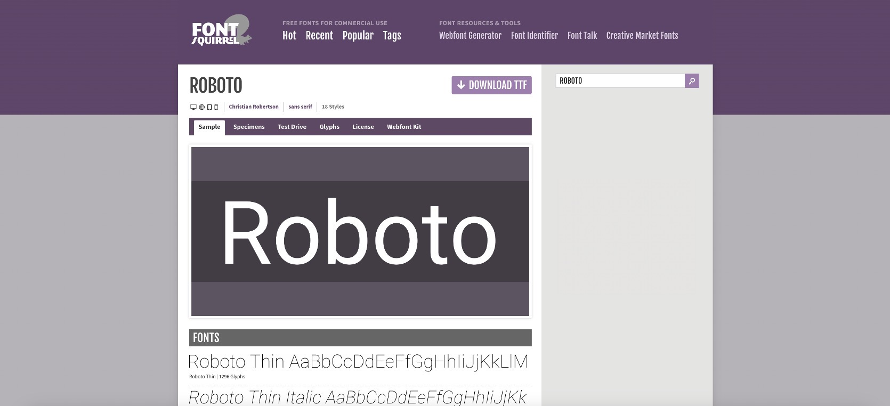
You can also see samples of the different styles and variations of the font, like thin, light, medium, bold, and black.
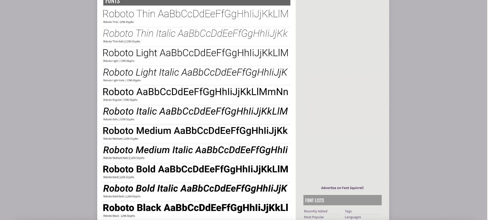
Once you've decided on a font that you want to use in your project, go to the "Webfont Kit" tab. Here, you can check if the font's license allows you to use it in @font-face CSS embeddings. You can also choose the subset and format.
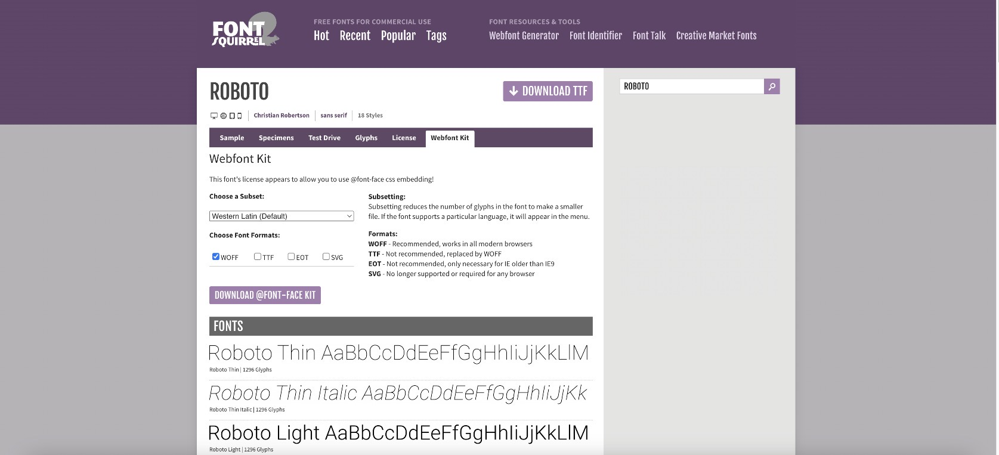
Clicking on the "Download @font-face Kit" button will download a compressed (zip) file. If you unzip it, you'll find a "web fonts" folder, the license as a text file, and an HTML file with instructions on how to use web fonts.
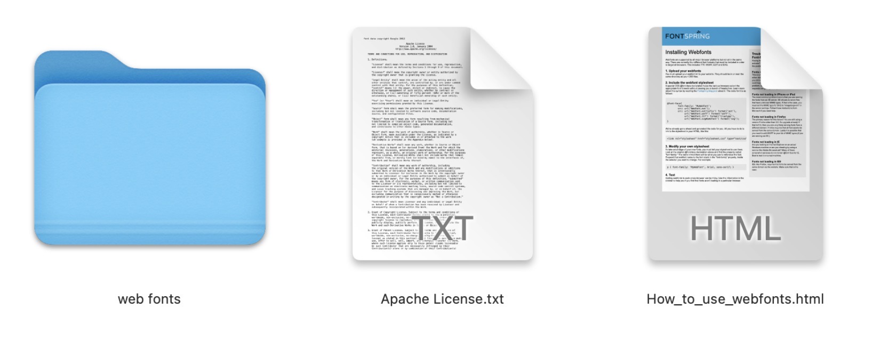
The web fonts folder will have all the font files that you need for your project. You will find them grouped into specific folders for the different fonts styles.
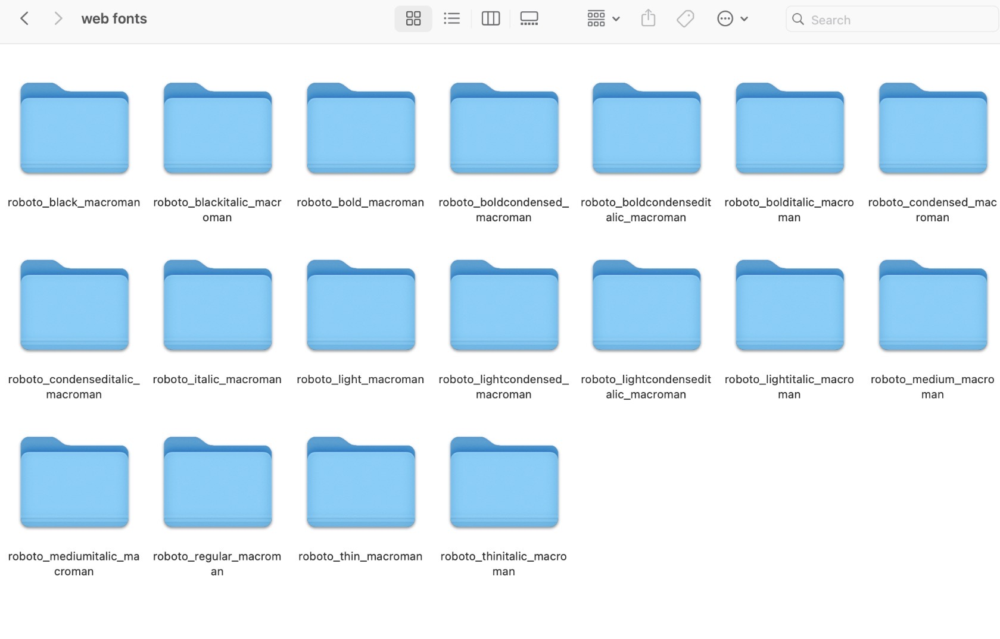
If you open the HTML file on a browser, it has instructions on how to add the fonts to your project, how to include them in the stylesheet with the @font-face declaration, and how to use them in the CSS rules.
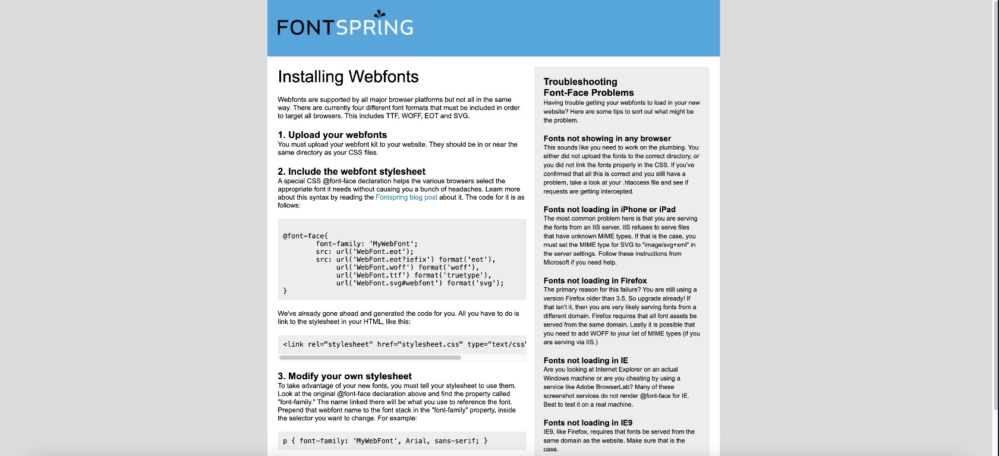
This is how you can add custom Font Squirrel fonts to your project. You can also host them on a separate server and use them as external fonts. External fonts are very helpful for customizing the overall look and design of your website. They can make your website truly unique.
However, you should also keep in mind that using multiple external fonts can increase the load time of the website, affecting its overall performance. You should always strive to find a balance between style and efficiency.
What is the text-shadow property, and how does it work?
LESSON
CSS doesn't apply any shadows to the text by default. This is an example of a paragraph without any shadows. But if you do need to add shadows, you can use the text-shadow property.
In CSS, you can describe a shadow throught a combination of its X offset, Y offset, blur radius, and color. First, you need to specify the X and Y offset, which represent the horizontal and vertical distance of the shadow from the textt, respectively. These values are required.
Here's an example of how to apply an X and Y offset on a shadow. We apply the text-shadow property with an x-offset of 3px and a y-offset of 2px
In the browser, the text and the shadow will look similar but we can also customize the color of the shadow by specifying the value before or after the offset. Let's set the shadow color. We will use a hexadecimal color here but you can use any valid color format.
We are writing the color after the offset but you can also write the color before the offset if you prefer. It's equivalent:
In the browser, the shadow will have a specific color, so we can distinguish it very easily from the text. Now that we can differentiate the shadow from the text, it's also important to see how positive and negative values affect the shadow offset. Positive values of the X offset and Y offset will move the shadow right and down, respectively, while negative values will move the shadow left and up. Here's an example that uses negative values instead:
Now the shadow will move left and up in relation to the text. Great. But the shadow is not looking very nice, because it looks exactly like the original text but placed behind it. To make it look nicer, we need to add a third value, the blur radius. This value is optional but makes the shadow look a lot smoother and more subtle. The default value of the radius blur is zero. The higher the value, the bigger the blur, which means that the shadow becomes lighter.
Here, we are setting the blur radius to 3px and we're back to positive values for the offset:
Now it's starting to look like a shadow. It's more blurry and subtle, so we can focus on the main text while the shadow adds some style in the background. From here, we can tweak the values a little bit until we find a combination of offset, color, and blur radius that fits our needs.
It's also helpful to know that the text can have more than one shadow. You just need to write them in the same text-shadow property separated by commas. They will be applied in layers, from front to back, with the first shadow at the top.
Here's an example of a paragraph with three shadows applied in layers. Notice that all these shadows are defined in the same text-shadow property and separated by commas:
text-shadow is a powerful CSS property for making your text stand out. It can also enhance the overall design of your web application. By choosing the offset, blur, and color, you can create a wide range of shadow effects.